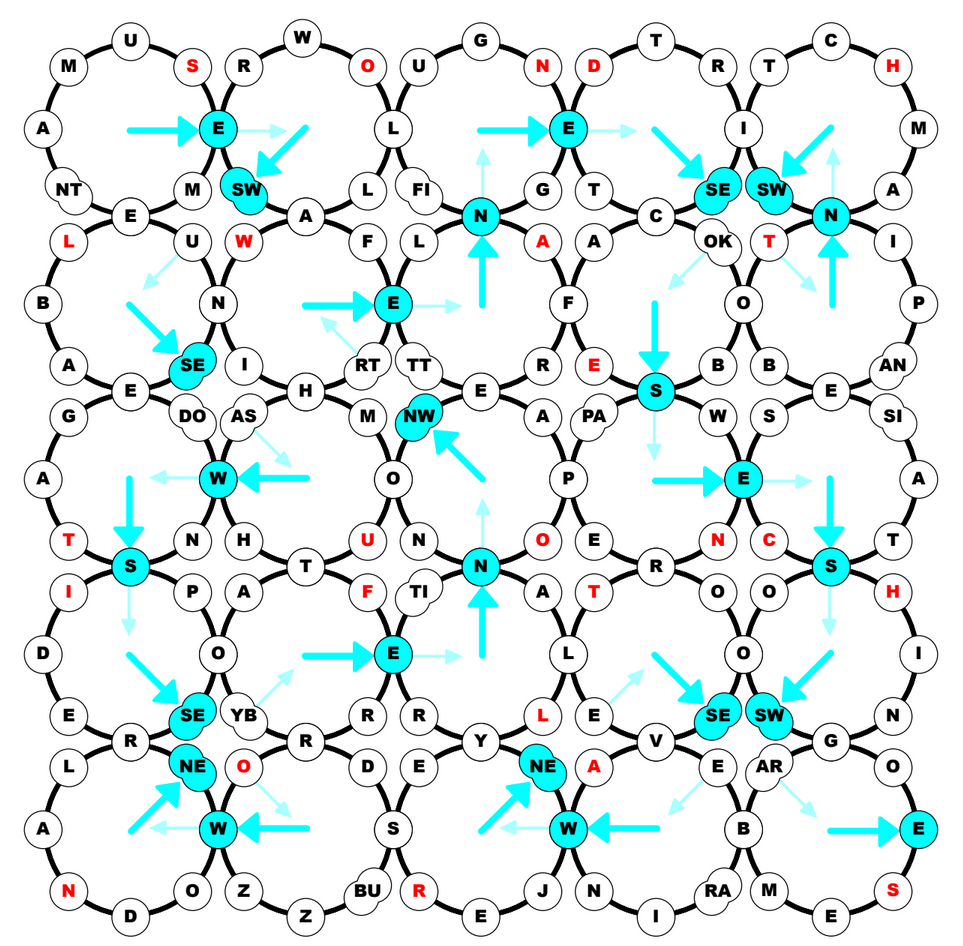

Nature Tour Solution
by Ata Gurpinar
Each of the twenty-five clues in the diagram has a 9-letter answer as follows, in order by row from left-to-right:
- Entertainment offered by some parks(+): AMUSEMENT
- Ingest again(-): RESWALLOW
- Overwhelming or surrounding(-): ENGULFING
- DIVIDED into three pieces (+): TRISECTED
- One who changes tracks used by a train (+): SWITCHMAN
- Impossible to be observed (+): UNSEEABLE
- Very flat, perhaps like a plain cookie (+): WAFERTHIN
- A piece of mail sent to a celebrity (-): FANLETTER
- Places to buy bestsellers or sip coffee (-): BOOKCAFES
- Legume often grown by gradeschoolers (-): PINTOBEAN
- Closer to the audience, in the theatre(+): DOWNSTAGE
- Oral hygiene liquid (+): MOUTHWASH
- Item unlike a sword or gun(+): NONWEAPON
- Something black and white and read all over (-): NEWSPAPER
- Periods of intense joy (-): ECSTASIES
- Rearrange or get rid of again (+): REDISPOSE
- Water-taxi (+): FERRYBOAT
- In a manner similar to part of the eye (+): RETINALLY
- President Franklin D. or Theodore (+): ROOSEVELT
- Moving like a Nike logo (+): SWOOSHING
- One who possesses acreage (-): LANDOWNER
- Meaningless jargon that markets well (+): BUZZWORDS
- The “garden state” (+): NEWJERSEY
- Something that might be measured during a sleep study (+): BRAINWAVE
- Prohibitions on particular imports or exports (+): EMBARGOES
Clues with with (+) are entered clockwise; clues with (-) are entered widdershins. When the diagram is filled, one cell of each ring has a letter (or letters) corresponding to the compass direction of the cell:

These directions form a single path through the diagram, visiting each ring exactly once, with the final ring exiting the diagram. As clued by the flavor text, the cell directly across from the double-cell in each ring is important. Reading these in order of the path spells the clue phrase SOLUTION FLOW AND THEN CHARTS, leading to the solution of FLOW CHARTS.